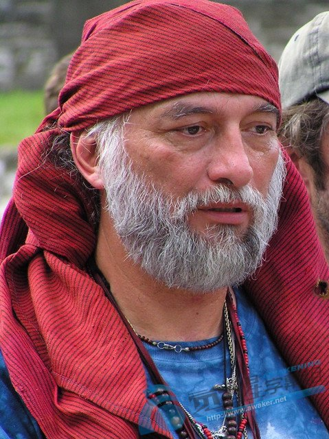
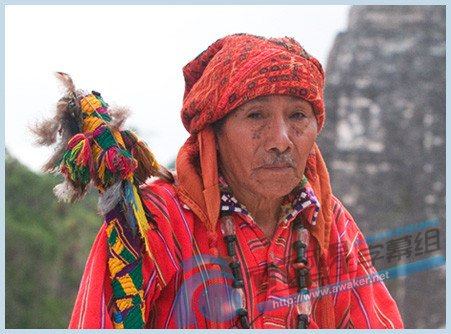
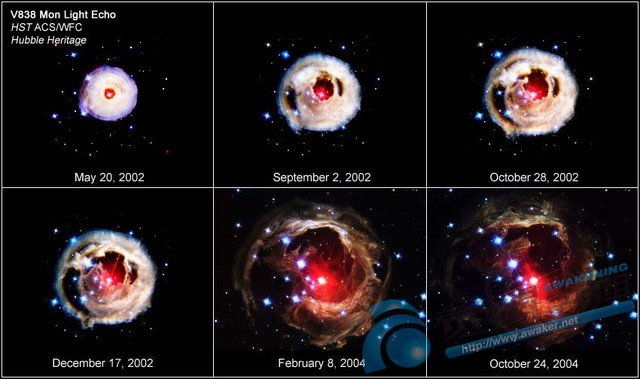
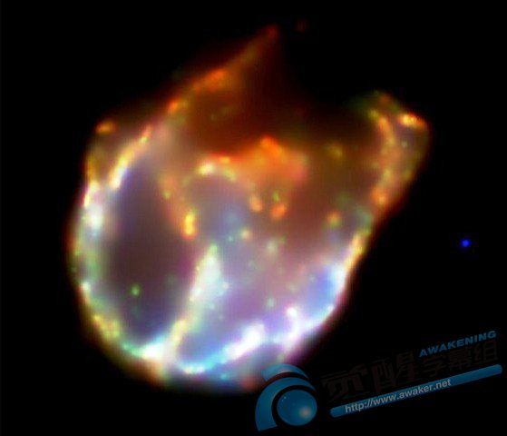
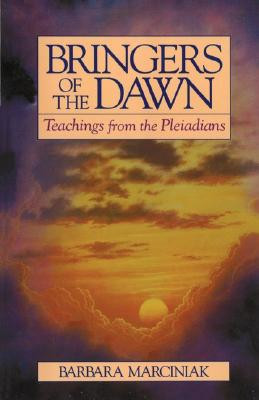
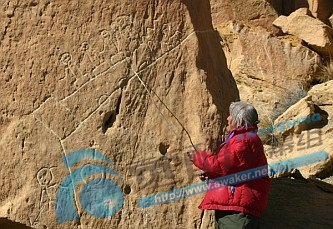
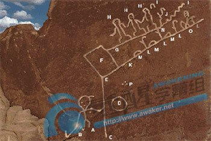
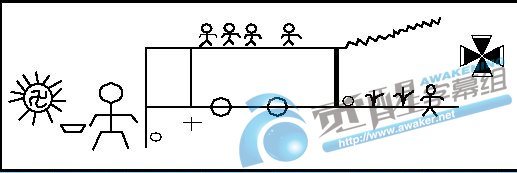
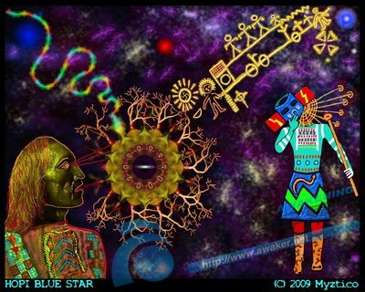

玛雅长老的忠告

本文是两位玛雅长老的文章和演讲，与其听那些图牟利的西方人所写的故事和所拍的影片等等制造恐惧刺激感官去争取票房的炒作，不如看看真正的玛雅长老说的话，而且他们说的话都不会登在主流媒体的报章与杂志上或者上电视，有的话也是刊登在一个不容易看到的小角落应酬一下，绝不会出现在显眼的版位或高调报导，原因会在文中提到。
前言
Carlo Barrios(上图)在Guatemala>瓜地马拉高原El Altiplano的一个西班牙人家庭中出生，他的家在Huehuetenango，是玛雅族Mam部落的聚居处。Mam部落跟其他玛雅人一样在北美的Turtle Island>龟屿(见�]释)过著原始传统的生活，他们是古老又深奥的历法计时人。
(�]：北美或美国的地图像一只龟，故称为龟屿，而且玛雅人早在人类还没飞上天去拍照之前就已经知道地图像龟，也知道其他洲的样子像什么，是谁告诉他们的，下文会有答案)
Barrios是�v史学家，人类学家和调查员，19岁起就跟长老们学习了25年，成为Eagle>鹰部落里的玛雅Ajq'ij，也就是庆典祭司和灵性导师(相当于和尚或道长)。
多年前，他和他的弟弟Gerardo对不同的玛雅历法展开了调查，跟多位老师学习，Gerardo还会见了600多位长老来增长这方面的知识。
Barrios说：考古学家们拜访了庙宇遗址，解读了刻文内容后自己根据推测去编出一套理论来，却没有正确解读那些图腾，结果只是他们自己的想像。也有人用玛雅的名义去写预言，就说2012年12月21日是世界末日，玛雅长老们都很生气。世界不会终止灭亡，而是改造。只有玛雅人才有那些历法，才懂得正确解读历法，不是其他外人。
玛雅历法，神话，预言
玛雅历法中的时间，季节和�L期的计算即广泛又复杂，一共有17种不同的历法，有一些还算到一亿年的�L期。全世界的人从1987年起都把焦点放在Tzolkin或Cholq'ij这部历法上。这套历法是根据昴宿星系的�L期去制定，被当成神圣的宝物看待。比如说，日期的计时者研究了历法之后认出某一年的一个重要日子，叫One
Reed，墨西哥人叫Ce Acatal。这一天有一位重要的祖先(见�]释)会像蝴蝶一般的回来。在西历中，One
Reed这一天是1519年4月21日，Easter>�突罱�(见�]释)的星期天，Hernando
Cortez带领了11艘军舰的西班牙舰队从东边(欧洲)来到了今天墨西哥的Vera Cruz。
(�]：祖先是指前文明亚兰提斯的灵魂而不是第一次踏足南美洲的西班牙人)
(�]：象徵死后灵魂重生的�突罱谡庖惶煸谝�稣被钉死以前就有了，而且耶稣也没有死而是潜逃离开耶路撒冷，不能再回去，格杀勿论。后来的罗马天主教廷为了捧红耶稣，就把这个节日硬套在他的身上，藉以凸显他的神��去取得更多信徒的信任和崇拜)
当西班牙的舰队靠岸时，玛雅的原住民都驻足静观会有什么事发生，正好那些扬起的风帆就像是在海面上飘的蝴蝶那样。从此以后就开启了一个新的时代，都在历法的预料之中。玛雅人叫这个时代为Nine Bolomtikus，就是Nine Hells>九个地狱(见�]释)，每个地狱是52年(9x52=468年+1519=1987年止)。从西班牙人登陆的那一天起，九个地狱的�L期正式展开，原住民们的土地和自由都被剥夺，接著全部人生活在病菌和没有尊严的日子里(见�]释)。直到1987年8月16日，全部九个地狱的�L期才结束，这一天就是Harmonic Convergence>和谐融入之日，同一天，几百万人(在世界各地)的神圣地点(圣山和庙宇)祈祷祭祀顺利过渡进入新纪元，也就是第五个太阳纪的世界(光明文明或延续黑暗文明，另外5125年，不过大约要到3767年才没人，然后进入千多年的冰河期，再重新开始另一个26000年和第一个太阳纪。进入4D空间的人则经�v了另一种时间，不是5125年，至少减半，然后在光明起结束前再提升到5D)。
(�]：埃及和印度都有九层或十八层地狱的说法，是否也跟玛雅人的地狱是在地表上以时间的长度来算，值得研究，因为在玛雅以外的世界也好像一直都活在地狱中。除了玛雅人遭到西班牙殖民主义者的侵略以及北美的印第安人被英国人欺负之外，世界各地如东南亚和印度半岛的原住民的命运也都一样，没好日子过，而中国人在清朝末年和民国初年的兵荒马乱之中甚至是独立之后经�v的大跃进和文化大革命也跟住在地狱里没什么两样。巴厘岛的印度教徒和妇女就被当时入侵的荷兰殖民地军队蹂躏杀害，中国各地也在二战时被欧洲人瓜分，都以经商为名义强迫就范，然后输入自认为优越的文化，语言，宗教和生活习俗要同化别人，不尊重别人的文化和信仰，甚至用武力消灭或卖鸦片荼毒别人，罪大恶极。因此这些国家的业报累积到今天才实现，比如现在的西班牙，葡萄牙，荷兰，英国等前殖民主义者。法国没有那么多业报，因为他们还算客气，都善待殖民地居民，也尊重各种不同文化，还认真研究保留，没什么不良记录)。
Barrios说，从1987年起到现在，(神话里的)左臂的物质世界正在衰退中，很慢但无可挽回。我们正处在一个和平开始的年代，人们跟地球和谐共处(有越来越多人喜欢大自然，厌恶城市的拥挤)。我们不再是活在第四个太阳纪当中，在2012年以前(1987-2012=25年)这段时间是过渡期。
(�]：过渡期间极端矛盾，极端黑暗，也极度光明，两相冲突，背道而驰，越来越两级化，坏人越坏，好人越好，再也不是好坏参半，每个人都做出了选择，有继续以低我做决定的，也有以高我做决定的。2012年之后两个世界就正式脱离彼此，距今只剩下17个月就不再同时重叠，到时是真的会有很多变化，不过都不是电影里演的那种，而是没有人料到却发生在每个人身上的事，许多人要到迹象太明显了才发觉出来，才知道自己还在3D世界里或者已经在4D的阿修罗界里)
在这段过渡期间，会有全球性的大变化，比如环境的大破坏，社会动乱，战争以及持续不断的地球变化,这些事情都可以从简单的玛雅�逊ㄖ械穆菪�数理的原则中预见到。Barrios说：一定会变，全部都会变。他说：玛雅的计时者把2012年12月21日看成是一个重生的日子，第五个太阳纪就从那一天开始(分裂成两种�逊ǎ�一个是继续3D线性时间�e的旧玛雅历，另一个是开启新的4D世界的玛雅历，因为时间概念不同，不再是一个小时60分钟)，因为太阳刚好越过银河系的赤道，地球，太阳和银河系中都对准在一条直线上(或者光子带上)。
2012年12月21日那天的日出是26000年来太阳第一次对准银河系的中心点，展现了神圣树的意义(伊甸园�e那棵树的另一个隐性的含义，是多层次的比喻)，也就是生命树(道教�e说的每个人都有的一棵本命树)，所有世界上的原住民都记得这一棵树。这个对准银河系中心的角度校准，将会打开一个管道让宇宙的能量流直接穿越地球(的中心太阳，从南北两极的出入口穿过去)，清理地球累积的污垢(黑暗文明的陋习与低能量)，包括地球里外的全部生命和居民(地底下的好坏阿修罗)，全部(生命和地球)都提升到更高的频率(但还是会有人不愿意提升，继续在低频率的地球上生活，因此地表会分裂出两个不同的空间同时存在，渐渐看不到彼此，隔阴的帘幕升起之后再度拉下)。
Barrios说，这个过程已经开始，而且改变的速度正在加快，还会持续加速。如果人们能够在2012年时做好准备，不破坏大部份地表和自然环境，我们就会提升到一个新的高度。
(注：地球会否提升不必等到全部人都准备好了才来提升，决定全在于个人，因为还是会有很多人会继续搞破坏习惯黑暗文明�e的作为和习惯不愿意提升自己，即便如此，还是不影响个人的提升划清界线，道不合不相为谋，因此地表上的空间会分裂，全都是集体意愿的结果，地球只是反映了人们的集体愿望)。
但是，要抵达那个(4D或5D)世界，我们必须改造强大的拦路虎(黑暗势力，有权有势有钱有知识的权贵菁英和富豪们，都是金字塔顶端那些决定社会命运的少数人，这批人的能量和频率都很低，也最执着于物质世界带给他们高人多等的好处)。
前路的景象
以Barrios本人对玛雅�逊ㄓ氪�统的理解，他对我们的现状以及前景提供了一个画面。2012年冬分那一天不是什麽世界末日(是黑暗势力的末日和黑暗文明的终结瓦解)。很多人都把这一天戏剧化来刺激人们的感官(�u造恐惧，然后赚钱)。其实他们都不懂得玛雅�逊ǎ�也只有受到信任去保留传统的玛雅原住民长老才知道真相。
他说：人类文明将会继续，不过会是不一样的文明(是光明的4D文明，也是光明的社会主义或共产主义，如金星和香巴拉)，而物质世界的结构将会改变(见注释)，在新的架构之下，大家(大多数人)才有机会活得更像人(更有尊严，而不是被欺负，压迫，压制，驱使去劳作的各种各样的奴隶而不自觉)。
(注：物质结构的改变就是从3D的密实固体转变到4D的稀薄气体的过程，但不是在短时间内转化成功，而是先慢慢转变成3D半，稳定下来之后再进一步转换成百分百的阿修罗乙太体，历时恐怕至少百多年或两个甲子的60年乘以二，但还是有少数人可以率先转换成阿修罗体，不必等其他人，也不必等到全部人都转换成4D的阿修罗场面就已经很可观，比起3D的物质世界精彩得多了，可以期待那种惊喜与神奇来大开眼界。3D半的身体就是介于这两种身体之间的性质，同时有着两种身体的特徵，还是有肉身的样子，但体重减轻，少出力就可以走很远的路或爬高山而气不喘也不汗流浃背，从高楼或高处跌下不死而是轻伤，这些怪现象已经在发生。而且不再喜欢吃肉，很快就生病，严重的话也会死得快，让更多人见证到吃肉的危险不得不信，不再像肉身那样可以让病菌潜伏在体内多年才来病发。除了不吃肉，还会吃得少就可以饱一整天，有些人只需要早餐跟喝白开水就等于有物质世界�e的三四餐的能量，也不容易疲倦。少数预先进化成4D身的人吃得更少或完全不吃，只需从空气，水和阳光吸收能量，而且身材适中，不胖不瘦，还变年轻。能够谈的变化太多，简直就是让物质世界的3D人叹为观止，大呼不可思议，科学家的旧科学全都无法解释。这些事已经在一点一滴的发生，已经有实例可以证明，有些人也已经体验到了，稍后再发多篇专文谈仔细，敬请期待)
我们正处在玛雅�逊ê驮ぱ匝e最重要(也最关键)的时刻，全世界的预言以及传统(神话)都汇集在一起(统一)，我们再也没有时间玩游戏(策略，耍心机，玩小聪明)。这个世代的灵性理念需要行动去实现，有许多很有力的灵魂都选择在这个时候投胎，而且黑暗与光明两边的都有，两造的人马都各展高级法术(白魔法与黑魔法，是另一场Armaggedon>世纪之战)。
东西会改变，轻易或辛苦都由人们(个人)自己决定(选择正面或负面，快乐或痛苦的方式去改变)。现在的经济已经是虚有其表(虚拟空洞的人为操作)。从1987年8月到1992年8月第一个五年的过渡期就开始在摧毁这个物质世界(见注释)，现在我们已经进入最后10年的过渡期，很多所谓固若金汤不可动摇的金融保障(银行，保险，币值，政府等)其实都是空的(买空卖空，没有实质货品的交易或生产，如Network Marketing>网络行销，Pyramid Marketing>金字塔行销，Ponzi Party>老鼠会等等投机取巧聪明的赚钱法，完全没有稳固基础，都在玩数字游戏和虚拟的金字塔结构，价格层层抽佣，比店�e卖的贵两三倍)。
(注：20世纪这一百年�e的经济危机全都集中在1987年之后，全部经济大事件的时间表如下：
1910年>上海股市崩盘，货币贬到一文不值
1929年>美国股市崩盘，陷入大萧条
1973-1974年>石油危机，全世界经济衰退
1982年>由墨西哥开始的债务问题导致南美洲的经济危机
1987年>黑色星期一，全球股市崩盘
1989-1991年>美国的储蓄与贷款危机
1990-1991年>日本的泡沫经济破裂，瑞士，挪威和芬兰的金融危机
1992-1993年>投机性攻击欧洲的货币汇率成为黑色星期三
1994-1995年>投机性攻击墨西哥的债务问题
1997-1998年>投机性攻击亚洲国家的银行债务结构的弱点导致亚洲各国货币全面贬值，一些国家陷入经济衰退，又称亚洲金融风暴。这些横扫全球好像在作区域巡��演出的投机性侵蚀各国的金融弱点的领头羊就是George
Soros>索罗和Jim
Rogers经营的量子基金，索罗是犹太人，为了赚钱，不会理会别人的死活，是典型的有智无德的精明犹太商人，把冷酷的冷静智力发挥到极点。2008-2009年的石油与粮食涨价有人也怀疑是他们联合其他神秘人士在背后操作，主要是来自美国的投机机构，结果被石油输出国组织的中东国家压了下去才停涨。神秘人士很有可能是光明会�e的人，利用局势和期货交易的弱点去操纵价格要大捞一笔。
2000-2002年>阿根廷和土耳其的金融危机，银行系统崩溃，投机性的网络(概念股的)泡沫破裂
2003-2006年>美伊战争，全世界经济低迷陷入低成长或负成长
2007-2010年>美国的贷危机，银行和保险公司倒闭或摇摇欲坠待收购，油价涨到破�l，粮价飙升，欧洲几个国家濒临破产，被称为次贷风暴
2011年>美元不断贬值，黄金价格持续攀升，欧盟被几个成员国的债务拖累
2012年>美元瓦解或起死回生？黄金涨到破�l还是暴跌？欧元取代美元还是疲弱？中国经济和金融的结构式重整？
从1910年到1929年隔了将近30年才有经济危机，再隔了42年才有另一次经济危机，然后就缩短到9年才有大问题，再缩短5年到1987年的黑色星期一。从此以后就是每5年一轮或每两三年都有事，到现在2011年已经是每年都有经济和金融的大新闻，似乎在跟地球的气候和地震配合这个时间表在加速转变，越来越精彩，越来越戏剧性，应验了玛雅预言在几千年就预见到的事，因为同样的事情也发生在其他同样体制的星球上，是必然的结果)
所有银行都很脆弱(濒临倒闭危机)，现在对他们来说是千钧一��，稍微不注意就会垮台(被玩期货交易的交易员搞垮，如英国的百年老店Barrings银行，那是业报的结果，很少人知道个中因果，雷曼兄弟的倒闭也一样，还有很多也要倒，还在挣扎中)。如果这些银行倒闭，大家会被迫依赖土地和个人技能去赚钱(而不是用电脑软件在赚钱)。货币系统会很溷乱(美元不稳，随时会崩盘，还在撑)，我们就必须依靠地球提供我们食物和住宿。还有，北极和南极正在融冰，海平面的水位将会上升，同时在海洋�e的陆地还会升起，比如靠近古巴的海域(美国西岸的加利福尼亚可能会陆沉或被淹没，因为位于两个大陆板块的交接处，互相推挤，一升一降。不论自己是留在旧的3D地表或新的4D地表，水位都会上升，奉劝各位不要住在靠海的地方，尤其是比海面高出一点点的平地，但还是有充足时间可以搬家，不会在一夜之间淹没，除非有海啸)。
融合的呼吁
Barrios在Santa Fe的集会上告诉听众一个最近在Guatemala举办的玛雅新年庆典上，一位在山洞�e穴居多年的Mam部落的长老跋涉到Chichicastenango在庆典上对大家说话，他只是发表了一段简短又直接的讯息，呼吁全人类一起支持生命和光明。因为现在每个人和每个团体都各自为政，如果支持光明文明的人聚在一起团结起来就有希望。
Barrios解释说：我们生活在两极化的世界�e，有黑夜白昼之分，男女之别，正面与负面的对立，光明与黑暗都需要彼此去取得平衡。现在的黑暗面势力很强，也很清楚他们要些什麽，他们有自己的愿景(如全球化的经贸组织，新世界秩序，意图统一和控制所有国家就范)和优先处理的事务，也是他们的阶级性组织结构(跟猎户帝国�e的经济挂帅和极权统治完全一样)。他们通过许多方法阻止大家跨入2012年以后的第五个世纪。
光明面这边的人认为自己才是最重要的，自己或团体的主张才是重点。由于文化和意见的多元化，就有竞争，也稀释了各自的力量，没有一个共识的焦点。黑暗面的势力也利用否认(官方不承认也掩盖许多真相)和物质主义来阻挠光明面各造的融合(通过他们控制的媒体大力鼓吹消费与奢华当作成功的标准去定调，让大家疯狂追求这类�j望)，还打击那些有意提升地球频率的人。他们还是紧握住衰退中旧世界�e的物质主义不放，他们拒绝改变(不能将既得利益如权力，地位，金钱和影响力拱手让出)，他们不要融合，只要维持现状(因为怎麽做都遭到反弹和挫折，就选择维持现状按兵不动，原因是现世业现世报的时间缩短到在几年内就要扯平，恶报回到始作俑者身上，没人躲得过，无一例外)，而且害怕变动与更替。
你无法摧毁或制伏第四个太阳纪�e的黑暗势力，他们太强(控制了政府和民间的每个层面层层把关)，也掌握了局势(可以挑起争端或战争)，跟他们对抗的做法不妥。黑暗势力只能通过简单和包容的心去改造才能达致融合，这就是第五个太阳纪的主要概念(和平的抗议游行比动刀动枪的内战和武力冲突更有效，这样军队就没有机会开枪镇压)。
崭露头角的第五个太阳纪要大家重新注意一直被忽略的事情。虽然在过去的年代�e，创造生命的元素都离不开水火风土，不过第五个太阳纪却是以第五个元素为主，那就是Ether>乙太，字典把乙太定义为天堂的稀有元素。
(注：科幻电影Fifth Element>第五元素指的就是这个元素，不过电影并没有强调这个元素而是把故事戏剧化，让观众学不到东西而是满足了感官。这种元素是一种能量，不属于水火风土的性质，会跟水火风土互动变得比较像气体而让肉眼看得到，其实最根本的性质还是光粒子，比较容易理解的形式是空中的电波，频率，可以传达讯号去连接通讯，肉眼看不到，仪器可以测出来)
乙太只是一种媒介，贯穿所有空间(和物质)，在宽度大的频道中传导能量波，从手机到人体的气场都有。乙太体是(物质)地球以外的空间(人的身上也有，都被压住展现不出来)，或者可以说是许多个天堂。
第五个太阳纪�e的乙太是跨宇宙(次元)的元素，没有实体，但也跟木头，石头和肉一样的真实(有可见的色相，因此阿修罗跟人一样有头有脸有身体有肉，不过比较稀薄，可以穿墙而过，跟鬼一样）。
Barrios说：在乙太的空间�e，两极化的东西可以融合，再也没有黑暗与光明之分，只有扬升的融合(黑白分明的4D灵界，物以类聚，没有两极之分或溷居在一起，还是有黑暗面的阿修罗，数量也不少)。但是现在的黑暗势力对融合不感兴趣(因为违反他们的既得利益)，还组织起来阻拦。
他们必须在地球上和环境中�u造种种的不平衡(如�u造国与国之间的对立和冲突，挑拨离间促进战争要发战争财)，使到大家都无法作好准备在2012年跟银河系中心的能量校准(不过不会成功，因为黑暗害怕光明，光度强到他们无法正视，落荒而逃，以一对百对千的一面倒局势投降，如埃及和图尼西亚推翻暴政的例子)。因此，我们必须一起努力寻求和平来平衡黑暗面的强大势力，必须照顾好提供我们食物和住宿的地球，必须全心全意地追寻团结与融合，以对应另一边的阻挠去保存生命。
为历史时刻作准备
Barrios说，我们正处在世界史上的关键时刻，我们都受到干扰，没时间再玩游戏。我们的星球不是重生就是被蹂躏(被好战的人和爱钱的企业老��股东们把全部人的福利给卖掉)，现在是觉醒和行动的时候了。
人人有责，你会在这�e不是偶然的，而是有一个重要的目的。虽然辛苦，但却有意义。我们都有机会成长，但我们必须先作好准备。
Barrios也提供了一些建议让大家在平衡中过渡。他说：预言中的改变将会发生(时空大挪移与变身成阿修罗的乙太体)，但是我们的态度和作为决定这种转变是温和或剧烈的。
我们必须选出那些尊敬地球和明白这些事的人作为代表�袢≌�治上的变革。
冥思和有灵知的习惯都好，但还是需要行动。重要的是要知道你的身份以及你和地球(盖亚)的(互动)关�S。以你的传统和心中的呼唤去进修，但也得尊重不同的意见，寻求团结。吃得小心，有许多食物不论表�e粗细都被污染(农药，毒性，细菌和低能量，见注释)，注意你吃进肚子�e的东西，学习保存食物(不过期不氧化不腐化，不变质不生细菌)，也保存能量(不消耗自己的正面高能量或者让负面的低能量拉低自己的频率)。
(注：一些禽流感之类的病毒是人为的细菌战，都是那些制药大厂故意散�巡【�引起全球恐慌向他们购买疫苗，其实疫苗早就已经研发出来，必须有病例才可以使用或大量生产。当然他们也会演戏，不立刻推出疫苗免得引起怀疑，不过还是被知情的人看穿诡计，稍后发专文谈类似阴谋，幸好全都失败，这就是黑暗势力在黑暗文明的末日中的挣扎，如果追溯这些人的源头，就会找到跟光明会有关的线索)
学习一些好的呼吸法，掌握你的呼吸。
(注：这�e是指冥思时最常用也最简单有效的呼吸法，佛祖是第一个教导这个方法的人，也通过这个方法取得突破进入佛性的空界。虽然简单，但却也可以分成很多层次，全看个人的造诣和造化。唯有通过专注在呼吸上的心念才能完全不想任何事情，不想事情才能把智力很强的脑袋放空，放空了才能打开右脑的功能，才能关闭肉体感官去打开灵性的感知力，而不是知觉，这样第三眼才能打开，打开之后智慧自然就跟着到来)
脑袋要清醒，遵从有根源的优良传统(不是旧社会旧时代的封建思想和陋习，不合理又效果很负面的传统)，哪一种(文化的)传统并不重要，你的心会告诉你是哪一些传统，但必须有伟大的根源(有智慧的传承)。
到地球上一些神圣的地方为和平祈祷(见注释)，尊重地球(感恩盖亚给我们的食物和住宿)。我们需要重新启动这些地方的能量(见注释)，这是我们的工作。一个简单又有效的技巧是点一根白色或浅蓝色蜡烛，那意念专注在火焰上，把烛光传给那些可以发动战争或创造和平的领袖(不论他们在过去的作为有多坏，自然会有业力机制自行处理平衡，个人不应怀恨在心或者有复仇之意，这样才会有正面的力量。懂得冥思的人可以用观想法或��向法去做，不必点蜡烛)。
(注：在前往神圣地点如圣山或大庙朝圣之前，最好是先练好自己的感知力，这样才容易在那种能量很高的地方感应道交，感受到那种无法用言语形容的力量，感觉自己处身在一片祥和的光明之中，或者感觉有很多另一度空间的人在用很慈祥的眼光看你，让自己受宠若惊，而不是毛骨悚然。这样的旅游经验就真的值回票价，不虚此行，不是当地的食物，风土民情和美丽的照片所能比拟取代的经验。你可能还会想再去一趟享受那种感觉，要不然到了那种地方也茫茫然不知道除了拍照留念还能干嘛。圣山圣地圣庙到处都有，不一定要出国，但某些特别的圣地还是得出国去看，比如西藏，印度，泰国，柬埔寨，巴厘岛，中国，尼泊尔，不丹等等，尤其是修行人很多道行又很高的道场)
Barrios说，现在是人类和地球的关键时刻，每个人都一样重要。如果你选择在这个时候投胎到地球上，你就有一份灵性的工作要去平衡这颗星球的能量。玛雅的长老们已经能够打开大门让其他种族的人都可以接受和学习玛雅族的传统。玛雅人一直都很尊重其他各族的宗教信仰，因为玛雅人知道他们的命运也跟全世界的人绑在一起(是共业，而不是只有某些人会被上帝选中免受大审判)。
最后，Barrios说，最高的智慧就在平凡中：慈悲，尊重，容忍，分享，感恩，原谅；一点都不�}杂不做作(但对很多人来说却很难办到，因为不习惯)。而且真理无价，当然就是免费的了(而不是在听完灵性的励志演说后被半强迫要捐款或买书，或者成为会员每月自动扣除10%的月薪贡献给上帝的殿堂作为改天上天堂的资粮)，智慧都已经编入你的基因密码中，你要的(能力，力量，慈悲，智慧等等)都在你自己身上，许多伟大的导师由始至终都这麽说。寻找你的心，就一定会找到你的道与路。

另一位玛雅长老Dan Alejandro(见上图)也否定了2012年12月21日是世界末日的传言，还精确地指出玛雅�阎械脑ぱ运�预见到的结果。以下内容是他于1999年9月在New Mexico州的Santa Fe的演讲。
前言
我们今天会在这�e都是我们的命运，也是我们的使命。灵魂把你们叫过来，你是很特别的，我并没有比你特别多一点，而且你还比我特别得多。我只是个贫穷的玛雅人，我们没有你们所拥有的学校和大学，我们住在贫瘠的荒郊野外，我有的东西全是父亲留给我的。
玛雅历中的预言
宇宙就是我们的知识来源，我们研究宇宙，书本就是Maya Codex(类似中国的易经，万年历和通书)。对我们来说，这就是我们的文献，我们的手就是书本，写了5000个Codixes>史记，都是我们的教科书。我们跟无形的人通讯，他们叫我Wandering Wolf>流浪的狼(星际流浪者)。我来这�e是要应验玛雅族和霍比族的预言，预言说：那些中部的人将会团结北方的鹰(美国人)和南方的�m(南美人)，因为我们是一体的，就像掌上的手指一样(是兄弟)。意思是说中美洲(墨西哥，巴西等地)的长老将会统合北美和南美的人。预言将会实现，这就是为什麽我会在这�e。
我们的天文长老观察了很长时间，知道这个预言会在什麽时候实现。这一天从第12个Baktun期的1987年8月17日开始(银河系中心附近的超新星1987a爆炸诞生)，也就是所谓的Harmonic Convergence>和谐融入日。从那一天起，我才开始在世界各地走动。这一天开始了第12个Baktun期(共25或26年)，而第13个Bahaou期将会在你们的阳�训�2012年12月21日终止，也就是我们的第四个太阳纪(5125年的现文明)结束的时候(第五个太阳纪也在2012年12月22日开始，为期5125年，但会缩短，因为4D时空的时间概念跟过去太阳纪的时间速度不同，估计会减半)。
(在第五个太阳纪开始之前)会有很多问题(政经教等各方面)，有大自然灾害和剧烈变化。因为有人邀请我以及其他长老站出来告诉大家这些预言，我们在为自然界说话，我们不能再污染这颗星球，如果地球活不下去，我们也别想活了。在这个大环境下，再也没有种族，肤色和信仰的分别，你的哀伤和寂寞就跟我的一样。
为什麽我们都对爱有同样的感受？因为我们有一样的太阳和呼吸，整个地球都在共同使用同一个太阳，空气，水和土地。我们在地球上有不同的颜色，外观和味道，你和你的音乐(音频)都朝向造物者放送。玛雅人的手脚被绑住，心被挖出来，都在过去500百年(468年)应验了预言中所说的事，直到今天还在应验。在Guatemala，我们不能讨食物和土地，要不然会被枪杀。他们(西班牙殖民军队)在晚上带走我们的领袖，折磨他们，强�λ�们，再把他们的心挖出来或者直接枪毙，这些事从500年前起就已经发生，直到今天还是一样。他们(美国人，中东人和欧洲人)要彼此毁灭，把地球都变成金钱的世界。很快就会有疟疾，热浪，自杀(在校园和大街上乱枪扫射)和洪水降临，我们要看看在缺水以及海陆空都被污染的情况下，他们能否用金钱解决问题。因此我们就必须现在就停止砍伐树木，免得事后才来亡羊补牢。
我们要把那些拒绝污染的人团结起来，为将来的子孙着想，我们要留给他们什麽样的世界？坦克和枪吗？我们必须给他们的是友爱，平等，自由。地球属于造物者，让人类使用，不过人们却划分土地，然后待价而估在卖地契。没有人可以把太阳和空气�孜�己有，都是属于每一个地球居民的。玛雅的天文学这知道很多事情，但并不是无话不说(时机未到就不说)。
(注：这就是猎户帝国，爬虫类在他们的世界以及其他物质世界�e实行的资本主义制度，所有星球上原本免费共享的资源都先用武力霸占之后再零售给所有人�u造财富，然后抽税，也同时利用一般人会有的�j望去奴役人们为金字塔顶端的掌权人卖命劳作，层层剥削，大鱼吃中鱼，中鱼吃小鱼，符合3D世界�e的生态结构。他们也把一套制度带到地球上来，因为物质世界的低能量喂养了黑暗文明，很自然就成了大家要认命服从的大环境和游戏规则，很难改革或推翻，闹革命的那些理想主义者都化成灰牺牲了自己也成全不了大家，只能靠多数人的觉醒去反对这种制度重新获得自由，不能完全怪4D的阿修罗在背后操控，他们只是乘虚而入，善加利用人类自己自愿接受的生态以及对他们有利的形势。不过3D的幻象矩阵>matrix真实得很，很难突破，需要个人很大的努力去看穿假相。虽然不少的人间导师都下凡来讲解提供各种修法，但多数人还是摆脱不了�j望的捆绑宁愿醉生梦死溷日子至死方休(才来修)，无法�纹�辛苦挣来的财产，战利品，地位，名声等身外之物，更无法放弃自我中心的主导思想，理由很多也很充足，跟真理一样辩驳得头头是道，很难说服。因此，老师带入门，修行在个人，无法勉强，佛或上帝都没办法)
这些日子以来有很多末日论者出现。因为1987年8月11日星球校准位置和角度给地球带来更多能量，导致更多地震，火山爆发，淹水，�U风和龙�苑绲鹊�(地球正在提升自己，必须清理人类累积多年的低能量，因此多发生在业障严重的地方如美国，中国，欧洲，多少跟业障有关，但也不完全是业障的问题，不能一概而论)。在2012-2013年之间还会有一个又大又红的彗星要经过地球(见注释)。我们只是地球上的动物(3D�e兽性未泯的人，因为下三轮还很发达，接近动物的性情，自卫和攻击的反应能力都很强)，在天上还有其他人。彗星或许会掉在别的地方(不会撞上地球，只是经过而已，但威力也够大)。这不是死亡的预告，不过疾病却会来自污染(不被彗星波及而是被自己�u造的污染害死自作自受)。这就是为什麽我们要聚在一起停止污染带来的疟疾，以便应验预言中所说的(意识提升成功的避开这些线性时空�e的宿命)。
(注：这应该就是每26000年会经过太阳系靠近地球一次的红色星球Nibiru>尼比如，相当于木星那麽大，天文学家定名为X行星，为了溷淆视听，就说成是彗星。也不是红尘的3D星球，而是4D的红矮星，来自天狼星系，已经被上面的5D人和天狼星人改造成星舰(星球舰队)，成为星际联邦的维和部队，可以脱轨移动，但速度慢，因为体积太大。上一次经过时，上面的众多种族和居民之一的爬虫类Annunaki藉机踏足地球在北非和北印度一带留下他们的后代，但无法适应3D的低频率而绝种，考古学家已经挖出一些阿奴人的遗骸，特点是后脑壳很长，体型高大，在科幻电影中常会看到他们的怪头颅，如第五元素这部片子。这些爬虫类还算温和，也有好人，不能一概而论，也跟人类当中有人向善有人向恶发展一样，选择全在个人。现在的Nibiru为了不惊吓到地球人，以折射光的技术隐身在太空中(见下图)，但还是被各国聪明的天文学家用等离子>Plasma的技术看出来，不过他们会在地球上的人的意识有所觉醒都准备好去面对不恐慌的时候现身在空中，成为另一颗红太阳，迫使各国政府，尤其是天文科学发达的美国政府等大国不得不公�蜒诟嵌嗄甑氖率担�威信全失，到时会有更多真相被挖出来公诸于世，在一直都被人为操纵的主流媒体上大事报导，更多依赖和只相信主流媒体报导的人会恍然大悟，如梦初醒，进一步实现了所谓的大觉醒，觉知与认知迅速扩展)

上图是隐形中的Nibiru，下图是通过等离子感温技术拍到的尼必如

玛雅人的祖先
在1994年于Guatemala的一个聚会上，有300多位长老参加，点了72个小时的圣火，不是为了实现什麽预言，而是要唤醒地球的核心力量，也是我们这些长老聚集在Santa Fe十天举办庆典(类似喇嘛的法会)的原因，就称为Continental Gathering Reunion>大陆团聚会。
1997年我们又在哥伦比亚的Bogota市聚首，在亚马逊结束这场盛会，有400多位长老参加，在那一次推选了北美一带的原住民来延续在Santa Fe的庆典，希望你们也可以帮助我们，为和平祷告。每一次聚会都会发表文章和完成仪式，每个部落的代表都分享了他们的知识和预言，还有各自在不同地点举办的庆典。我们挣扎着保卫地球，所有在会上讨论的目标都记录在桉编成书。我们在写历史，也搞出版，这样有关当局的人也可以读到。
每次庆典我们都花了36个小时去祷告，每个人都参与，献出贡品(跟印度教，佛教等古老宗教的做法一样)，做了纪念石刻。那个玛雅金字塔�e的水晶骷髅由一位女人保管，过后会送回到(玛雅的)金字塔，保管人是Anna Mitchell Hodges。这个水晶骷髅是来自昴宿星团的礼物(见注释和图片)，�e面藏了轮��的记录(地球的阿卡西记录或业力账本)，那些长老都知道�e面的生命科学。玛雅的科学之母是昴宿星人，这些骷髅必须物归原主，因为这是千禧年以后的科学(量子和灵性的器材)，你们都来这�e接收和散�颜飧鲅断�。
(注：单单说昴宿星人是这些外星文明的科学之母还是不够，因为时常跟他们一起行动的还有天狼星的5D人，互称兄弟，两者都是星际联邦的活跃份子，抗衡猎户帝国和黑暗势力的影响力。因为他们在还是4D人时就是在天琴星座那�e被爬虫类欺负逃难离开，移民到现在的天狼星系和昴宿星团，也曾参与仙女星人为首跟猎户帝国为首(光明与黑暗面的两位老大两股势力)开打的星际大战(Star Wars就是这段银河系�e的大事，结果是黑暗王战败)。现在双方已经妥协，互不侵犯，也承诺不能再动武，因为彼此的武器已经强到可以炸毁整个星球或破坏大面积的居住环境，比核子弹还强得多，后果就是没有赢家，两败俱伤。为了自保和长居久安，猎户帝国也加入了星际联邦，不过其他爬虫类阿修罗因为好战的本性难改，自己另外组织爬虫类联盟不受星际联邦的制约，但也尽量避免正面冲突，因为打不过星际联邦的先进配备，连4D的维和部队都打不过了，更遑论要单挑个别5D星球的部队。他们继续跟猎户帝国合作开拓殖民地，关�S很密切，猎户帝国的聪明人�拙×吮阋耍�左右逢源，是百分百功利挂帅的利己主义者，没好处的事不干，就跟本地球上联合国�e的五强那样，只为自己的利益投票，不理会其他国家的死活。昴宿星人和天狼星人这两兄弟除了不断提升自己，也紧密合作帮助其他3D和4D星球的人提升，比如金星就是在天狼星人协助他们提升之后由昴宿星人接手再协助他们提升到5D。昴宿星人比较直接跟原住民接触，教导各种生活知识和快速提升文明，各个古文明的突飞勐进都有他们参一手，要不然物质化的3D星球的低能量和生态最适合爬虫类们玩游戏和奴役更多人，生活在地狱般的五浊恶世�e不断轮��受苦；而天狼星人的接触比较间接，教导比较多的是智慧方面的思想，都是概念性和抽象的哲学，比较活跃的地点是在埃及，埃及的第一座金字塔就是他们建的)
那些Wingmakers>天人(有人形的外星人，有别于天使，是训练天使或守护灵的天人)都是星际人，玛雅的意思就是我的子民。他们先到了亚兰提斯，建了第一座金字塔，就在百幕达三角洲的海底，Tulan就是亚兰提斯的一个城市名称。他们的先知来到亚兰提斯口授宇宙真理，传承了几千年。开始时有四位(见注释)，第一位昴宿星人教导天文学以及宇宙的起源知识，还有其他神秘的事物。他们拥有第六感和第七感的力量，也就是心电感应和第三眼(灵视能力)，他们教导大家如何相处合作。昴宿星人也造访地球许多次，拜访了亚洲(中国)，西藏，Kamaya(北非乌干达的地方)以及印度等圣地。
(注：在中国文明初期的神话�e也有几位取得突破的着名能人，如有巢式(房子)，神农氏(医药)，燧人氏(取火)，伏羲(全面的知识包括八卦)等等多位不知从哪�e冒出来，很明显的在知识，智力，能力，智慧各方面都远远超过当时的古人水平。他们教导的知识和技术沿用到几千年后的今天还在用，而且易经更是比现代科学还要先进，他们的出现完全违反遗传学和基因进化的正常步骤。在埃及，印度和其他古文明也有类似情况出现，要不然这些文明就不会这麽快有所突破，人类还得住在山洞�e面更久的时间才懂得盖房子和种米来吃)
(注：通常都四人一伙是因为小型飞碟只能承载四个人，每个人背对而坐面对四个方向，通过心电感应在操作飞碟时结合成一个思想达成共识，不会同时有两三个意愿或决定起冲突，好处当然是眼观四方八面零盲点零死角，偶尔也最多能挤多一个司令员进去共五个人。耶和华降陆在以色列时也是四人一组，希伯来人的旧约圣经�e描绘的四面天车就是形容耶和华和他的三位部下乘坐的飞碟，不过这批人是昴宿星人的死对头，专门来�妆阋撕透闫苹怠Ｍ庑侨说男⌒吞讲夥傻�设计大体上都是这样以四人一组，就像人类的战斗机设计一样最多只能乘坐两个人，大同小异，有一定的局限和原因才这麽设计)
大家称他们为Nagamaya(第一个文明乐姆亚的一个部落种族)，有一些石刻就描绘了他们的到访，跟Wingmakers一样，还有更多类似石刻会被发现(在中国，印度，埃及等古文明都有类似石刻)。在2012年，那些智者会再回访，有一些已经投胎成人身，我们不知道他们是谁，直到时机成熟时，他们就会现身再度降陆。这就是预言�e说的祖先，不只是玛雅人，全部人都会挺身而出(为提升做出贡献)。
预言�e说：让黎明破晓，让新的一天开始，让大家都和平快乐。这些都是黎明的讯息，都来自Bringers of the Dawn>黎明的信使(见下图的书本封面)，你们也会知道我们是从哪�e来的人。灵媒们说，我们将会一起见到我们的山脉，我们的儿童，我们的水等等(4D世界的景象)。我现在回来，看到我们的孩子在不同的宗教信仰中失去了方向，城市被毁，山脉，沙漠，河流都被污染。当他们再回到地球上时，我们要给他们看些什麽？他们会看到什麽？这就是我们今天这个聚会的目的，告诉大家拯救地球的重要性，停止污染地球。

<霍比族的预言>
预言石的解读
这块石头在Arizona州的Oraibi(霍比族老家)附近被发现，被称为预言石(至少两千多年的历史，由灵媒通灵得来的讯息)，概括了许多霍比族的预言，(一般西方人和霍比族长老的)解读如下：



左手边那个大的人是伟大的神灵(上帝/高我)，旁边那个碗代表一种指示，要霍比人放下他们的武器。右手边那条直线是几万年的时线，大人的右手所指的地方是他回来的时候(大约是十分之三或四的位置，也就是第五个世界或太阳纪，也就是2012年起)。
伟大的神灵也把生命线分成两条横线，下面那条是比较狭窄与自然界和谐相处的永�a生命线；上面那条比较宽的是白人的科技成就。两条线之间比较细的垂直线是白人的到来，线下面的十字代表基督教(同时跟白人一起来到美洲)。十字下面的小圈 圈代表永续的生命。
上面那四个小人形代表过去三个世界以及现在的第四个世界；另一方面也显示一些霍比人也追随白人的物质与科技进步，被白人的虚荣所诱惑和同化。
下面那条线的两个圈圈代表地球被摇晃两次(两次世界大战)。最左边那个太阳�e的�d字以及最右边那个十字环是Pahana这位真正的白色兄弟的两位助手。
两个圈之后那条比较粗的垂直线衔接上面那条横线是表示这是人类最后一次机会回返大自然，要不然线条不再是直的而是弯弯曲曲的。垂直线旁边那个小圈是最后一次机会过后的大�Q化(大审判)，然后玉米丰收，伟大的神灵回来，生命线持续到永 远。
最右边那个人是霍比族，代表霍比人维护地球和四角落。上面那个十字环表示霍比人接受伟大的神灵的指示向四个方向迁徙，也代表四种颜色的玉米，就是人类当中四种不同肤色的人。
(注：上述的解读是许多人的看法，也有霍比人自己的说法，真是那样的意思吗？现在就提供另一种解读供比对，或许还有其他解读法，欢迎独到又有说服力的解读来分享。）
新的解读法
从左到右逐个破解如下：
那个像太阳有个�d字在内的大圆圈是银河系，�d字是顺时钟的，正是银河系的旋转方向，逆时钟是扩展时的方向，顺时钟是向银河系中心或黑洞收缩回返源头(见下图)。

旁边那个像碗的东西是从银河系中心的黑洞生出来的超新星或星系，是可以承载生命的行星，�a星和星球，就像盛饭的碗一样(见下图像平台的其他银河系或星系)。
但是，有了各种星球还是没有生命，就得先有灵魂的高我那个最原始的生命有那个意愿要住在星球上，星球和星系才可以住人，原理就像人体一样，如果没有灵魂就会死，或者像个行尸走肉不能思考的活死人，只能吃饭睡觉讲废话而已，像机械人，也无法再进化到下一代，一定绝种。因此这个碗旁边的人画得特别大，有别于后面画的小人物，因为这是伟大的神灵或上帝，而且是集体的灵魂，不只是高我的巨人而已。
巨人旁边那条直线C是地球的循环�L期或生命/灵魂进化的时线，手指所指的地方是高我回到地面上的时间点或者本文明所在的时间点，大约是十分之四第四个世界终结时的第五个世界，也就是意识提升由高我重新主导低我的意思。
直线旁边一个小圈是指曾经发生的大洪水和陆沉的灾难，霍比族的祖先遭遇到的大事，也在那个时候他们(的灵魂)跟伟大的神灵有个协议，要坚守传统的智慧，不再背道而驰，而且成为宇宙真理和地球的守护人(另一批兄弟在地底下的香巴拉王国保护佛祖传的金刚时轮法，地面上的西藏人则维护佛法)。
F那个格子可能是指霍比人居住的四角落，或者也指地球在以前是一块大陆而不是分裂成现在的五大洲。这个格子的意义暂时比较模煳，相信还有其他更广大的含义。
格子向右分出两条横线，上面那条是灵性发展的路线，下面那条是物质的科技文明，也是3D的线性时间。
下面的十字是表示基督教或出生的两千多年前，衔接精神主义和物质主义两种人，但线条不粗，表示注重精神和灵性进化要提升意识的人并不多。换句话说，信奉基督教并不一定使人崇尚精神主义和朝向灵性进化，也可以很物�j熏心或拜金贪财。问题不在于耶稣的教导，而是基督教的原始教义和圣经被权力组织挟持，篡改，扭曲原义，错误解读和误导信徒的结果。其他宗教也有类似问题，但还没有基督教和圣经这麽严重被破坏被滥用。这个十字对发出讯息的人很重要，相信就是昴宿星人传的，耶稣也是昴宿星人之一，他们信奉的是基督精神或无私的大爱，不是基督教，是两码子事，两者可以完全切割开来。
下面那条直线的物质发展路线贯穿的两个圈就是地球被摇晃了两次的第一和第二次世界大战。在两个圈之间也有一个像玉米的东西(见上面的彩色图)，表示在二战以前开发原子弹还成功引爆，在二战时正式派上用场。这一件大事惊动了银河系�e的外星人，也就是星际联邦，在人类的精华史上意义重大。
两个圈圈过后就是一条比较粗的垂直线再度衔接上面那条代表灵性进化的横线，表示在二战过后的某一个时间点(1987-2012年期间)，在下一个大灾难发生以前有很多人在2012年前后觉醒，�纹�了物质享受选择提升上去，追寻心灵上的进化。
之后这条物质科技的横线或3D时线继续发展，很快就在2012年以后迎来线条上的小圈，表示有来自天上的灾难，可能是彗星，可能是路过的Nibiru/X行星，可能是太阳风暴，也可能是在空中引爆的多颗核子弹头，或者是气候的灾难如臭氧层破了大洞等等。接着就是两个像玉米的东西，其实更像蘑菰云，不是两大集团的人在两块大陆上丢核弹互相攻击就是发生两次核能电厂的辐射��漏污染大面积的环境，才有下一个人的腿或下半身在线(地表)下面，也就是有一半的人躲到地底下去住，另一批人留在地面上。这个情况跟很多走到了绝路的3D星球都很类似，现在的火星以及小灰人搞核子实验失败的星球都有同样的结局(躲在地下过了百多年才能回到地面上生活，不过自己的身体和皮肤已经变得像白色和灰色壁虎)。人类正在走同样的老路，这是可以预见很难避免的发展结果，因为3D时间是线性的，前车可�a。不过日本的福岛核电厂出事之后，还是有专才和科学家不理会这些，还想说服大家也向其他亚洲的富裕国家推销他们的新技术有多安全，已经做到百分百零差错，只是还没经历过像大地震和大海啸的临场考验罢了，这也是他们绝不会谈的可能性，而且他们会说必须试了才知道他们的技术耐不耐得起大自然的破坏。
这条线性时间在人类必须躲到地底下去避开辐射尘不久之后就终止，也就是渐渐灭亡，无法再进化繁衍，再也没人，绝种了(只有极少数与世无争的原住民部落继续在高山上或山洞�e过几万年来不变的生活准备过冰河期，之后等待下一个文明再出现)，而且文明在完全灭亡之后辐射尘还是没有完全消除。因此空中出现一个像核子辐射的标志(见注释和图片)，画得很大，表示�崖�很大面积的天空。
(注：这个像辐射的标志是双关意，文末再总结。原图是四个环，辐射标志是三个环，这麽做是要暗示而不是明说，不必画出三个环也可以解读出来，而且又透露了另一个讯息，非常高明)
上面那条灵性的发展路线上有四个人，也就是四种肤色的人类：红，黄，黑，白。个子最小的走在前面，三个个子一样大的走在后面。走在前面的是地球原本红皮肤的原住民如玛雅人，霍比人，西藏人等部落的少数民族(时间久了以后辐射也变了一些，深浅不一，色底或基因还是红皮肤的)，后面那三个当然就是黑人，白人和黄种人。个子画得小是因为前文说过的霍比族(以及跟他们同种同宗的地球原住民)让其他三种人先选玉米或者地球上的食物(和资源土地等等)，结果自己到最后没得选择得到了最小的玉米，大的好的全被那三种人拿走了。意思当然就是只有红种人是无私的利他主义者，与世无争，不注重物质生活，其他三种人都自私，竞争力强，追求物质享受。纵观过去几千年的人类世界史，果然没错，到今天还是同一副德性，没什麽突破。另外，小身子也表示他们过得很谦卑，各方面都矮人一截，当然就只有被欺负的份。表面上他们是落后了，不过在灵性的纯�Q度和进化上，他们都走在所有人的前面，带领所有人提升到更高的意识和空间的新世界，正如现在的人都热衷研究玛雅文明，霍比族神话，藏传佛教等等少数民族的智慧在寻找心灵上的出路和指引去平衡物质世界�e的贪婪，竞争，对立，冲突等等陋习和罪恶感。而且，旅游热点已经从传统的人造景点和都市人文遗产转向穷乡僻壤，鸡啼虫鸣，荒山野岭，风景优美的乡村小镇或淳朴古镇，因为都还没被污染。。。。。
原文地址:
http://www.wretch.cc/blog/awaken2012/25354483
http://www.awaker.net/a/2012tansuozhenxiang/2011/0806/2589.html